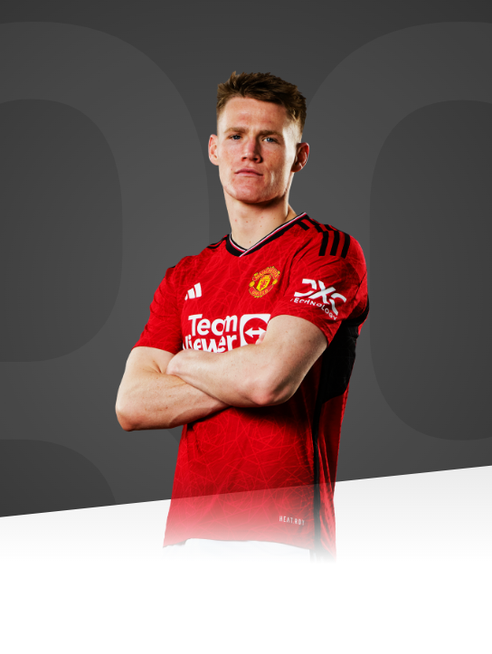

You've got to keep working hard. The moment you stop is when things can go bad for you.

AGE
26
APPEARANCES
215
CLEAN SHEETS
21
BIOGRAPHY
An intelligent operator who can perform in midfield and attack, Scott McTominay was officially promoted to the senior squad at the start of the 2017/18 campaign.
After being a mainstay in the Reserves during 2016/17, he received a call-up to the first team towards the end of the campaign and made his debut away at Arsenal in May 2017.
Lancaster-born McTominay had just turned five when he first caught United's eye at the development centre in Preston. He progressed through the ranks with the Reds and, following a growth spurt during his Academy days and endless hours in the gym, McTominay's game has altered dramatically as he's got older. A player with great ability on the ball, he can also handle the physical demands in the middle of the park, snapping into tackles when needed, and he is useful in the air.
Since sharing no.10 duties with a certain Marcus Rashford in United's Under-16s, he has moved deeper into central midfield, viewed as his most natural position, where his strength has come in very useful.
McTominay enjoyed his first senior pre-season tour in the summer of 2017 and netted his first goal during the 3-0 friendly win over Valerenga. The midfielder was subsequently handed the no.39 shirt at the start of the 2017/18 season and, having made a real impression on his first Champions League start against Benfica at Old Trafford, has continued to make the most of further chances that have come his way with outstanding contributions in victories against Liverpool and Chelsea.
The midfielder received former manager Jose Mourinho's Player of the Season award at the end of a breakout season for the youngster, who will be hoping to go from strength to strength in the next campaign.
In the 2018/19 campaign McTominay continued to impress and showed his versatility by dropping into a deeper position of centre-back on occasion.
On 21 January 2019, Scott signed a contract extension with the Reds that will keep him at the club until 2023. “Manchester United has been my life since the age of five and playing for the club I've always supported is all I've ever wanted to do,” said the midfielder upon agreeing his new deal.
The Scotland international's progress has continued as he has managed to hold down a regular place and provide a goal threat from midfield, in addition to boundless energy and determination. His strike in the win over Norwich City in October 2019 was a landmark one for the club - the 2,000th United goal in the Premier League.
After suffering a knee ligament injury in our Boxing Day clash with Huddersfield, McTominay bounced back in style in February, scoring his first goal in European competition against Club Brügge at Old Trafford. The Academy graduate also provided one of the great moments of the 2019/20 season few days later. Our no. 39 saw Manchester City keeper Ederson off his line and scored a brilliant goal from 35 yards out to secure a 2-0 Manchester Derby win in stoppage time.
In June, McTominay was delighted to sign a new contract with Manchester United until 2025, with the option of a further year.
All I have ever known is United and I hope that my passion for the club shows every time I go onto the pitch. I'll continue to give everything for this club whenever I pull on the shirt.
Scott captained the Reds for the first time during the Emirates FA Cup third-round tie with Watford in January 2021, and scored the winner in that game.
In the summer of 2021, McTominay was part of the first Scotland squad to compete in a major international tournament since 1998, when Steve Clarke's side featured in Euro 2020.
The Scot remained a regular throughout 2021/22, missing very few games as he racked up a further 37 appearances for his boyhood club. McTominay was on the scoresheet for the Reds against Burnley in December and scored the winner in our FA Cup third-round win over Aston Villa in January.
The occasional injury ruled the midfielder out of a handful of games, but for the most part, McTominay was a trusted performer for the Reds in 2021/22.
Scott began the 2022/23 campaign in the middle of the park for new manager Erik ten Hag, and regularly featured throughout, racking up 49 appearances in all competitions. The Scot hit three goals too, as well as finding form in front of goal for his national team - he scored five times for Scotland across the campaign.